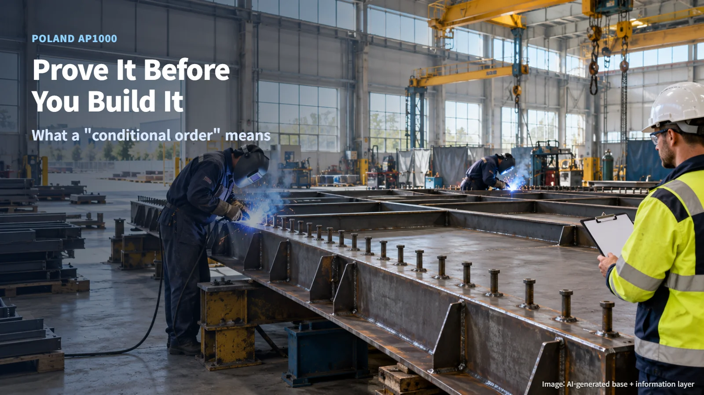
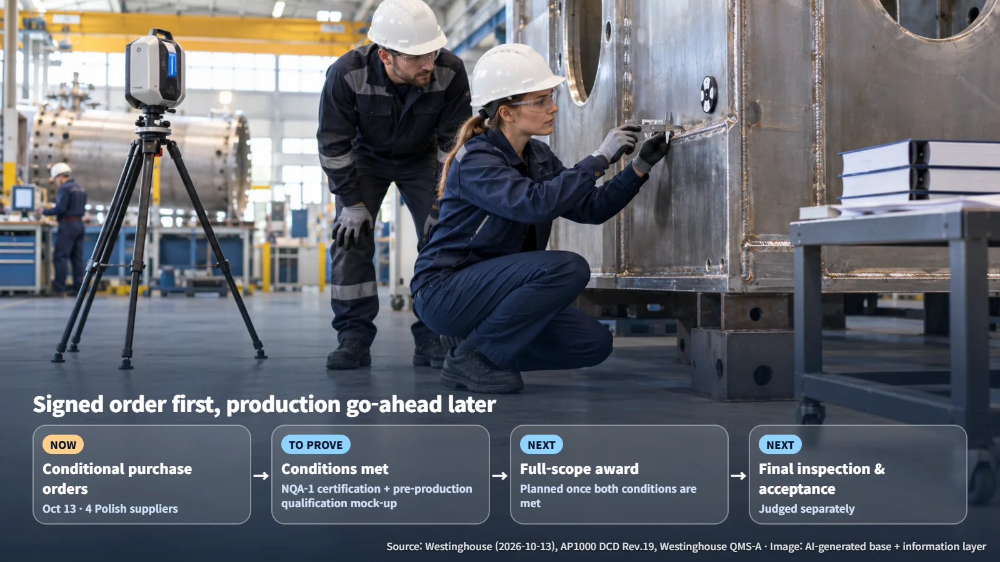
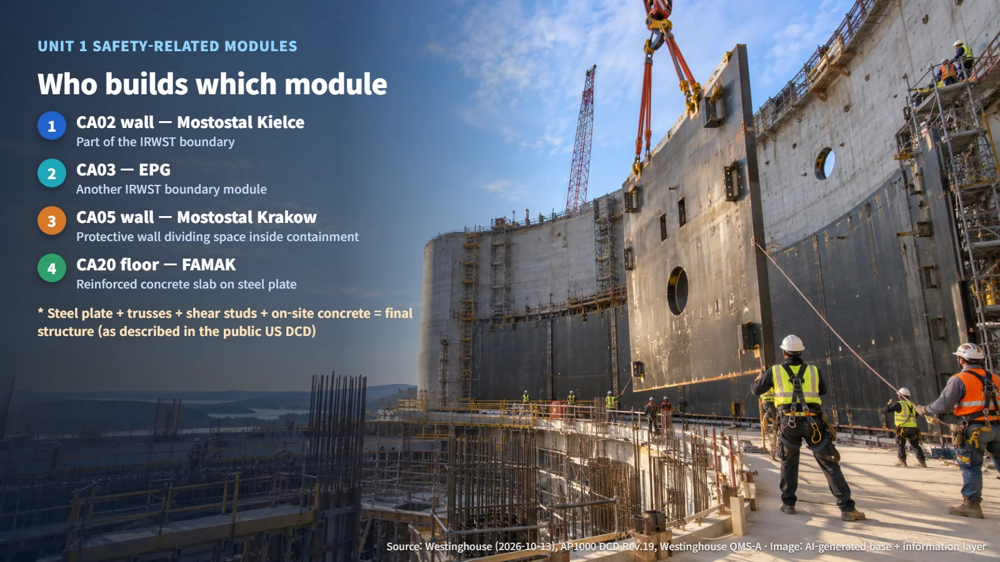
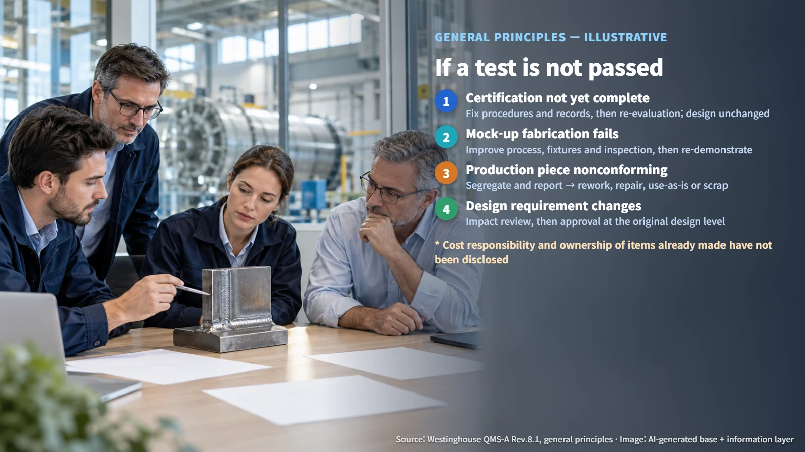

Poland · AP1000 Supply Chain
Prove It Before You Build It: Poland's "Conditional" AP1000 Module Orders
Westinghouse has placed conditional orders with four Polish suppliers for AP1000 safety-related modules, with the full scope tied to NQA-1 certification and successful qualification mock-ups.
When news of a nuclear component order arrives with the word "conditional" attached, it raises an obvious question. Has the order been placed or not? And what happens to anything already built if the conditions are not met? The first nuclear plant in Poland offers a clear case for walking through where the order ends and where the proving begins.

What a Conditional Order Is: Signing First, Producing Later
On October 13, 2026, Westinghouse of the United States announced that it had placed conditional purchase orders with four Polish suppliers for safety-related modules for AP1000 Unit 1 at Lubiatowo-Kopalino. Modules are large structural assemblies built in a factory ahead of time and then put together on site.
The announced scope breaks down as follows. Mostostal Kielce will handle the CA02 wall, and EPG (Energomontaż-Północ Gdynia) will handle CA03. Both modules form part of the boundary of the in-containment refueling water storage tank (IRWST), which holds water inside the containment building. Mostostal Krakow will handle the CA05 wall, a protective wall that divides the space inside containment, and FAMAK will handle the CA20 floor, which forms a reinforced concrete slab on top of steel plate. FAMAK's share is the floor portion of CA20, while the rest of CA20 lies outside its announced scope.
The condition is the heart of the matter. Westinghouse stated that it will award the full scope after NQA-1 certification and the successful fabrication of pre-production qualification mock-ups. How far the current orders reach across material purchasing, mock-up fabrication and production fabrication has not been disclosed, and neither have the order value or the deadline for meeting the conditions. What the orders establish today is the path to the full scope; series production and a firm commitment to buy every module come after both conditions are met. Signing the purchase order is the first step, and cutting steel plate for the production modules is a later step that the conditions unlock.

Two Tests: Quality Certification and a Qualification Mock-up
NQA-1 is the nuclear quality assurance standard of the American Society of Mechanical Engineers (ASME). Certification demonstrates the ability to manage records, procedures, personnel and the supply chain in a systematic way. A pre-production qualification mock-up is a trial piece that shows a supplier is ready to carry out the actual fabrication. Like the written and road tests for a driver's license, both conditions are required, and each proves something the other leaves open.
Consider a hypothetical example to make the point. Even with an excellent quality manual, a shop that cannot control welding distortion still has to prove its fabrication skill separately. Conversely, even if the mock-up turns out well, weak nonconformance reporting or document control leaves a quality-system issue to resolve. This example only illustrates the requirements; it describes no actual problem at the Polish suppliers. However neatly the filing cabinet is organized, the proof is only half complete until the shop floor has produced a cleanly welded mock-up.
Steel Modules Are Completed on Site
The AP1000 Design Control Document (DCD) Revision 19, made public by the US Nuclear Regulatory Commission (NRC), describes the structural walls as steel plates, trusses (triangular frameworks) and shear studs (stud-shaped fittings that lock steel and concrete together), combined with concrete poured on site. The fabricated steel is part of the final structure, and it carries loads as designed only once on-site joining, installation and concrete work are complete. What leaves the factory is a steel skeleton that becomes a wall once it is filled with concrete on site.

That is why the shape of openings and joints stays as designed, whatever would be easier to fabricate. Only some of the IRWST walls are concrete-filled modules, so CA02 and CA03 each need to be assessed on their own structure. One more point matters here. The DCD is the public US design baseline, and the Polish approved design and contract drawings are separate documents. Whether a module passes is judged against the drawings, specifications and inspection plans incorporated into the relevant order.
If a Test Is Not Passed
The response depends on the cause of the failure. If quality-system certification is delayed, the supplier corrects its procedures, records and audit findings and is then re-evaluated; the structural design stays as it is. If mock-up fabrication fails, the cause is analyzed, and the process, fixtures (frames that hold the workpiece in place), workers and inspection methods are improved before the supplier demonstrates again. If a production piece fails to meet requirements, it is identified, segregated and reported as a nonconformance, and its disposition then needs approval. If the purchaser changes a design requirement, revised drawings and an impact review lead to approval. If corrections ultimately fail or the delivery date cannot be met, the supplier is re-evaluated and alternative sourcing is considered.
To take another hypothetical, if welding distortion is the problem, changing the welding sequence or the fixtures may solve it. Changing plate thickness or material, however, requires a determination of whether it is a change to the design requirements, followed by approval. The Westinghouse quality management system (QMS-A) requires design changes to receive the same level of review and approval as the original design.
The same logic applies to items already made. A nonconformance covers both physical defects and cases where missing documentation makes it impossible to judge quality. Items made before certification still go through their own review and disposition after the supplier is certified. The disposition options are rework (reprocessing to meet the original requirements), repair (restoring the item to a usable state by an approved method), use-as-is (accepting it without further work, which for safety-related items requires documented technical justification), and rejection or scrapping. Who bears the cost and who owns items already fabricated are absent from the public announcement, so those questions remain open.

The word "conditional" captures a basic principle of nuclear components: prove it first, then build it.